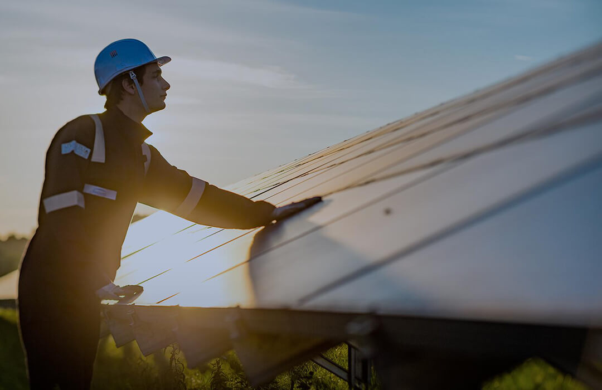
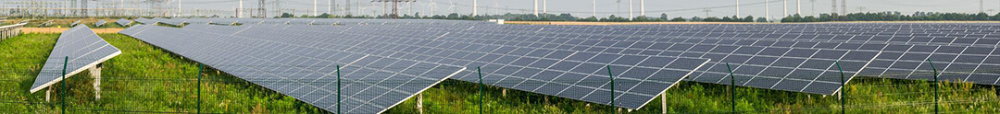

Energia Solar. Uma energia alternativa, com baixo impacto ambiental.
Mas ainda tem pouca participação nas matrizes de energia elétrica do Brasil. Segundo a Aneel ( agência nacional de energia elétrica), a representação da energia solar ainda é muito baixa no setor de energias sustentáveis, com índice de 0,02%, e a previsão, para aumentar essa participação, será somente em 2018. No estado de Santa Catarina, empresas como a ENGIE Solar, maior geradora privada de energia elétrica do país e a TEK ENERGY, tecnologia em energia sustentável, tem ajudado a alavancar este setor energético, facilitando o acesso deste tipo de energia.
O Brasil é um dos países com maior potencial, o país tem um dos maiores índices de insolação para o consumo de energia solar, mas ainda o consumo é de 70% pertencente às energias elétricas sustentáveis (hidrelétricas).
Imagem: (ENGIE)
Sustentável
Apesar de ainda não ser muito natural o uso desta tecnologia, estamos vivendo, sim, uma importante alteração da nossa matriz energética. Além disso, temos profissionais bem treinados, oferecemos preços acessíveis e buscamos parcerias e oportunidades que possibilitem nossa expansão” Afirma Rodolfo Souza Pinto, diretor - presidente da empresa ENGIE, em florianópolis, uma da maiores empresas de energia solar do Brasil, fundada em 2016. A empresa deu um salto triplicando seus colaboradores.
Santa Catarina vem avançando e crescendo em 300% no setor, atualmente são 550 sistemas fotovoltaicos instalados e a estimativa é que se aproxime em 2000 sistemas no final desse ano. Ainda se destacando, o estado conta com a UFSC um dos maiores centros de pesquisas em energia solar do país.
A ENGIE oferece vários de tipos de pagamentos, seu financiamento pode ser feito em até 72 vezes , podendo significar que, dependendo do local escolhido para a instalação, o investimento mensal pode ser abatido pela própria economia na conta de energia. Seu propósito é tornar acessível para todos.
Rodolfo aponta que dependendo as particularidades físicas de um imóvel, a energia solar é eficiente para suprir os 100% do consumo, diz, “ O Brasil está apenas começando a explorar a fonte solar.”
Imagem: (Tek Energy)
Competência em energética
A Tek Energy, especialista em vendas, instalação e distribuição de sistemas solares, sediada em Balneário Camboriú, está com um propósito de trazer para o Brasil um painel fotovoltaico, similar à pele de vidro, utilizada em fachadas de edifícios.
“Estamos trazendo ao Brasil uma alternativa para a geração de energia sustentável que pode ser facilmente adaptada ao projeto arquitetônico como acabamento ou revestimento nos edifícios. Com certeza será uma tecnologia que pode revolucionar o mercado da construção civil. Além disso, no que diz respeito à geração de energia, o painel é altamente resistente ao calor e a perdas pelas condições climáticas como tempo nublado e úmido, por exemplo. É indicado para as diferentes regiões do Brasil”, explica o diretor de marketing, Douglas Salgado.
O foco da empresa é fazer com que todos consigam ter seu próprio sistema de energia solar. O equipamento pode ser instalado em terrenos, telhados de residências, indústrias, comércios, embarcações e agora em fachadas de edifícios. Uma tecnologia alemã, que possui uma película de Telureto de Cádmio, que é um substrato semelhante ao silício.
O presidente da Absolar ( Associação Brasileira de Energia Solar Fotovoltaica), Rodrigo Sauaia, declara que ainda neste ano de 2017 o país deve registrar a marca de 1 gigawatt instalada em usina de energia fotovoltaica, transformando a luz solar em energia elétrica.
De acordo com a ANEEL, os sistemas de energia solar chegaram a 880 mil instalação até o ano de 2024.